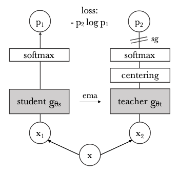
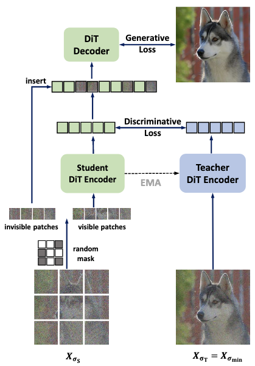

Diffusion meets Self-Supervised Learning
Overview
| Denoising | MIM | CL | SD | |
|---|---|---|---|---|
| Classic SSL | DAE | BEIT, MAE, SimMIM | SimCLR, MoCo | DINO, iBOT |
| + Diffusion | l-DAE | MDT, MaskDiT | Disperse | SD-DiT, SRA |
Denoising
Classic SSL: DAE
+ Diffusion: l-DAE
Masked Image Modeling
Classic SSL: MAE
+ Diffusion: MDT
+ Diffusion: MaskDiT
Contrastive Learning
Classic SSL: SimCLR
+ Diffusion: Disperse
Self Distillation
Classic SSL: DINO
DINO 与对比学习的一些方法有相似之处，但它更适合从知识蒸馏 (knowledge distillation) 的角度理解。在知识蒸馏中，设有 teacher 和 student 网络 \(g_{\theta_t}(x),g_{\theta_s}(x)\)，它们经过 softmax 后分别形成类别分布： \[ P_t(x)^{(k)}=\frac{\exp(g_{\theta_t}(x)^{(k)}/\tau_t)}{\sum_{k=1}^K\exp(g_{\theta_t}(x)^{(k)}/\tau_t)} ,\quad P_s(x)^{(k)}=\frac{\exp(g_{\theta_s}(x)^{(k)}/\tau_s)}{\sum_{k=1}^K\exp(g_{\theta_s}(x)^{(k)}/\tau_s)} \] 其中 \(\tau_t,\tau_s\) 为温度系数。我们的训练目标是让 student 分布 \(P_s\) 逼近 teacher 分布 \(P_t\)，即： \[ \min_{\theta_s}~\mathbb E_{p_\text{data}(x)}\left[-\sum_{k=1}^KP_t(x)^{(k)}\log P_s(x)^{(k)}\right] \] 为了将上述知识蒸馏框架适配到自监督学习中，DINO 采用了 multi-crop 的策略：给定图像 \(x\)，构造 2 个分辨率为 224 的 global views \(x_1^g,x_2^g\)，以及若干分辨率为 96 的 local views. Teacher 网络总是接收 global views，而 student 网络两种都接收，于是训练目标为： \[ \min_{\theta_s}~\mathbb E_{p_\text{data}(x)}\left[\sum_{x^g\in\{x_1^g,x_2^g\}}\sum_{x'\in V(x),\,x'\neq x}\left(-\sum_{k=1}^KP_t(x^g)^{(k)}\log P_s(x')^{(k)}\right)\right] \] 其中 \(V(x)\) 表示对图像 \(x\) 构造的所有 global views 和 local views 的集合。另外，在自监督学习中我们并没有一个训练好的 teacher 网络，因此 DINO 采用 student 网络的 EMA 版本作为 teacher： \[ \theta_t\gets\lambda\theta_t+(1-\lambda)\theta_s \] 其中 \(\lambda\) 为 EMA decay 系数，在训练过程中依 cosine schedule 从 0.996 增长到 1. 进一步地，为避免崩塌，DINO 在 teacher 网络末端接入了 centering 和 sharpening 操作。DINO 的整体示意图如下所示：

+ Diffusion: SD-DiT
如图所示，SD-DiT 建立在 MDT/MaskDiT 的基础上，因此扩散网络包含两部分——只接收可见 token 的 encoder 和拼接上 mask token 的 decoder. SD-DiT 视 encoder 部分为 student，通过 EMA 的方式引入了一个 teacher encoder 做自蒸馏。对于扩散模型而言，加噪本身就是一种自然的数据增强方式。SD-DiT 实验发现，teacher 网络应始终接收最低程度 \(\sigma_\min\) 的加噪，以达到最好的蒸馏效果。

另外，与 DINO 只蒸馏 \(\texttt{[CLS]}\) token 不同，SD-DiT 会蒸馏所有 token. 具体而言，设 \(\mathbf e_\text{T},\mathbf e_\text{S}\) 分别为 teacher 和 student encoder 的输出，\(j_\theta\) 为一个三层的 projection head，则对第 \(i\) 个可见 token 有 teacher 和 student 分布： \[ {P_\text{T}}_i^{(k)}=\frac{\exp(j_\theta({\mathbf e_\text{T}}_i)/\tau_\text{T})^{(k)}}{\sum_{k=1}^K\exp(j_\theta({\mathbf e_\text{T}}_i)/\tau_\text{T})^{(k)}},\quad {P_\text{S}}_i^{(k)}=\frac{\exp(j_\theta({\mathbf e_\text{S}}_i)/\tau_\text{S})^{(k)}}{\sum_{k=1}^K\exp(j_\theta({\mathbf e_\text{S}}_i)/\tau_\text{S})^{(k)}} \] 那么自蒸馏损失为： \[ \mathcal L_\text{D}(i)=-\sum_{k=1}^K{P_\text{T}}_i^{(k)}\log{P_\text{S}}_i^{(k)} \] 总自蒸馏损失为所有可见 token 的自蒸馏损失与 \(\texttt{[CLS]}\) token 的自蒸馏损失之和： \[ \mathcal L_\text{D}=\frac{1}{|\bar{\mathcal M}|}\sum_{i\in \bar{\mathcal M}}\mathcal L_\text{D}(i)+\mathcal L_\text{D}(\texttt{[CLS]}) \] 为避免坍塌，SD-DiT 同样采用了 DINO 中的 centering 和 sharpening 技巧。